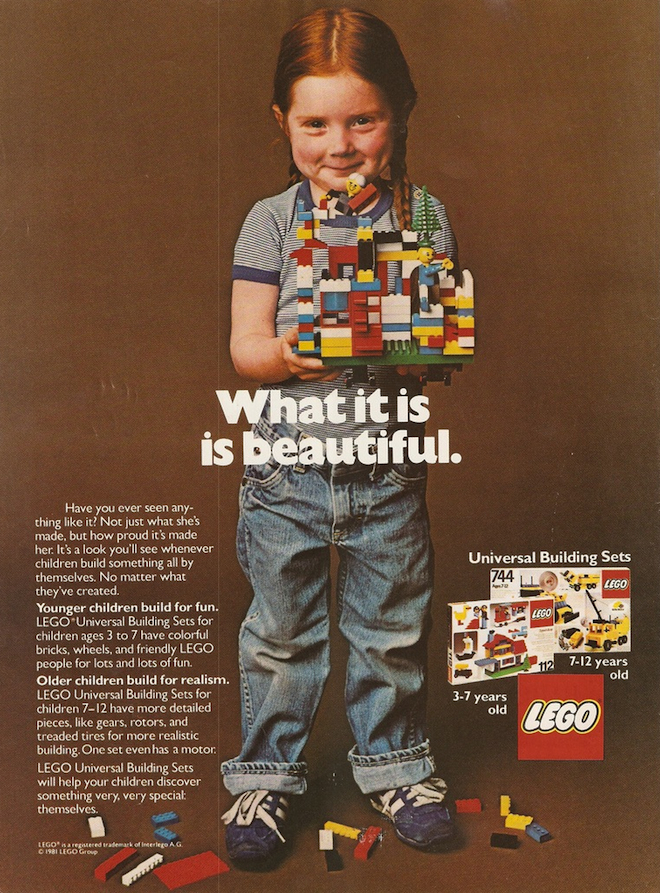

Why It Matters
Sometimes I forget that it isn't obvious why scientists ought to learn to program–or why anyone else ought to. Being more productive, getting a better job… Those are all good reasons, but as Bret Victor points out, if we focus on those, we risk losing sight of what matters most.
To explain that, I have to quote Matthew Crawford's thought-provoking (and sometimes infuriating) Shop Class as Soulcraft:
We in the West have arranged our institutions to prevent the concentration of political power… But we have failed utterly to prevent the concentration of economic power, or take account of how such concentration damages the conditions under which full human flourishing becomes possible… Too often, the defenders of free markets forget that what we really want is free men.
Crawford believes that removing the experience of working with things from everyday life hasn't just deskilled us; it has demoralized us. Modern knowledge workers are just as alienated from their labor as any other assembly line worker; the gradual substitution of process for judgment is only "progress" if pride in one's work and connection with one's peers is left out of the equation.
That, for me, is what we're really fighting for. Making "hands-on" part of everyday life once again will, I hope, help children and grownups alike learn perseverance, curiosity, conscientiousness, optimism, and self-control. It's also my answer to people who ask why we don't just give scientists tools that will do what they need, and leave the programming to the programmers.
If you give a seven-year-old a LEGO Avengers set that can only be put together in one "right" way, you're teaching her that someone else gets to decide what she should do with her imagination. But if you give her a box full of parts, you've done this:

You see that smile? My daughter had that same smile last Saturday on her way home from a Girls Learning Code workshop on creating web pages. She's never going to be that proud of "personalizing" her home page using one of a dozen canned themes that someone else put together. She's never going to get up at six o'clock on a Sunday morning to create more stuff if all we give her is pull-down menus, just as scientists are never going to create things that we could never think of if we don't show them how.
And you see the title over the box, on the right? It says "Universal Building Sets". That's what we're teaching–that, and the freedom they bring.